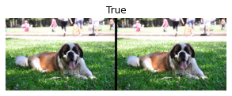
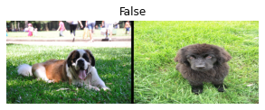
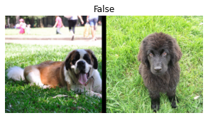
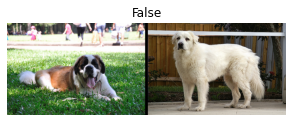
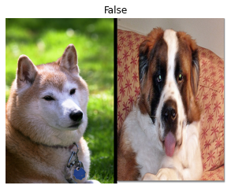

def f(x:int): return x+1
tfm = Transform(f)
tfm(2),tfm(2.0)(3, 2.0)In this article we will introduce and explore the fastai mid-level API, in particular it’s data preparation features. The mid-level api offers more control and customisation than the high-level api. We will apply the mid-level api to the example of predicting Siamese Images.
The fastai library (as of 2021) is a layered API that has 4 levels of abstraction.

In a previous article on text classification we saw how tokenisation and numericalisation were used to prepare the text data for the model.
Both of these classes also have a decode() method, that allows us to reverse the process i.e. to convert tokens back into text, though this may not be exactly the same as the default tokeniser currently is not entirely reversable.
decode is also used by show_batch() and show_results(), as well as by other inference methods.
When we create an object of the tokenizer or numeraclize class, a setup method is called (which trains a tokenizer if needed and creates a vocab for the numericalizer) each is then applied to the text stream in turn. These transformation type tasks are common, so fastai has created a base level class to encapsulate them called the Transform class. Both Tokenize and Numericalize are Transforms.
In general, a Transform is an object that behaves like a function and has an optional setup method that will initialize some inner state (like the vocab inside num) and an optional decode that will reverse the function (this reversal may not be perfect, as we saw with tok).
Another aspect about transforms is that they are always used with tuples, as this reflects the common nature of our data in terms of input & output variables. Also when we apply a transform to this tuple e.g. Resize we may want to apply it in a different way to the input and output variables (if at all).
So to create your own transform you can do this by writing a function, and then passing it to the Transform class. The Transform class will only apply the given function to one of a matching type, so for example because we have specified the type as int here the transform is not applied when the input is a floating point number.
def f(x:int): return x+1
tfm = Transform(f)
tfm(2),tfm(2.0)(3, 2.0)Also note here no setup() or decode() methods have been created here.
This approach of passing a function as an argument to another function is called a decorator which is specified by being preceeded by an ‘@’ symbol and putting it before a function definition. So we can do the same as above using this approach.
@Transform
def f(x:int): return x+1
f(2),f(2.0)(3, 2.0)If we want to specify a setup or decode method we will instead need to subclass Transform and implement the methods that way.
class NormalizeMean(Transform):
def setups(self, items): self.mean = sum(items)/len(items)
def encodes(self, x): return x-self.mean
def decodes(self, x): return x+self.meanWhen used, this class will first run the setup method, then apply the encodes method. The decode method will do the reverse when run.
tfm = NormalizeMean()
tfm.setup([1,2,3,4,5])
start = 2
y = tfm(start)
z = tfm.decode(y)
tfm.mean,y,z(3.0, -1.0, 2.0)Note the methods implmented and called are different i.e. setups vs setup. The reason for this is for example here setup also does some other things before then calling setup for you.
To join several transforms together we can use the Pipeline class, which is essentially a list of transforms.
tok = Tokenizer.from_folder(path)
tok.setup(txts)
toks = txts.map(tok)
num = Numericalize()
num.setup(toks)
nums = toks.map(num)
tfms = Pipeline([tok, num])
t = tfms(txts[0]); t[:20]TensorText([ 2, 19, 932, 81, 27, 20, 32, 34, 7, 260, 119, 1256, 143, 62, 64, 11, 8, 415, 1289, 14])You can also decode the pipeline, but there is no setup.
tfms.decode(t)[:100]'xxbos i caught up with this movie on xxup tv after 30 years or more . xxmaj several aspects of the f'The class we can use to connect our raw data (e.g. files) to a pipeline is the TfmdLists class. This can also run the appropriate setup methods for us. We can do this in a short, one line way for example.
tls = TfmdLists(files, [Tokenizer.from_folder(path), Numericalize])When initialised, TfmdLists will run the setup method of each transform in order, passing the items transformed by the previous transform. We can see the result of the pipeline on any item by indexing into the objected created.
t = tls[0]; t[:20]TensorText([ 2, 19, 1033, 73, 28, 20, 30, 35, 7, 265, 120, 1061, 176, 56, 70, 10, 8, 457, 1440, 14])TfmdLists also can decode.
tls.decode(t)[:100]'xxbos i caught up with this movie on xxup tv after 30 years or more . xxmaj several aspects of the f'And show.
tls.show(t)xxbos i caught up with this movie on xxup tv after 30 years or more . xxmaj several aspects of the film stood out even when viewing it so many years after it was made .
xxmaj the story by the little known c xxmaj virgil xxmaj georghiu is remarkable , almost resembling a xxmaj tolstoy - like story of a man buffeted by a cosmic scheme that he can not comprehend . xxmaj compare this film with better - known contemporary works such as xxmaj xxunk 's " schindler 's xxmaj list " and you begin to realize the trauma of the xxmaj world xxmaj war xxup ii should be seen against the larger canvas of racism beyond the simplistic xxmaj nazi notion of xxmaj aryan vs xxmaj jews . xxmaj this film touches on the xxmaj hungarians dislike for the xxmaj romanians , the xxmaj romanians dislike of the xxmaj russians and so on .. even touching on the xxmaj jews ' questionable relationships with their xxmaj christian xxmaj romanian friends , while under stress .
xxmaj as i have not read the book , it is difficult to see how much has been changed by the director and screenplay writers . xxmaj for instance , it is interesting to study the xxmaj romanian peasant 's view of emigrating to xxup usa with the view of making money only to return to xxmaj romania and invest his earnings there .
xxmaj in my opinion , the character of xxmaj johann xxmaj moritz was probably one of the finest roles played by xxmaj anthony xxmaj quinn ranking alongside his work in " la xxunk the xxmaj greek " and " xxunk " .
xxmaj the finest and most memorable sequence in the film is the final one with xxmaj anthony xxmaj quinn and xxmaj virna xxmaj lisi trying to smile . xxmaj the father carrying a daughter born out his wife 's rape by xxmaj russians is a story in itself but the director is able to show the reconciliation by a simple gesture -- the act of carrying the child without slipping into melodramatic footage .
xxmaj today after the death of xxmaj princess xxmaj diana we often remark about the insensitive paparazzi . xxmaj the final sequence is an indictment of the paparazzi and the insensitive media ( director xxmaj verneuil also makes a similar comment during the court scene as the cameramen get ready to pounce on xxmaj moritz ) .
xxmaj the interaction between xxmaj church and xxmaj state was so beautifully summed up in the orthodox priest 's laconic statement " i pray to xxmaj god that xxmaj he guides those who have power to use them well . "
xxmaj some of the brief shots , such as those of a secretary of a minister doodling while listening to a petition -- said so much in so little footage . xxmaj the direction was so impressive that the editing takes a back seat .
xxmaj finally what struck me most was the exquisite rich texture of colors provided by the cameraman xxmaj andreas xxmaj winding -- from the brilliant credit sequences to the end . i recalled that he was the cameraman of another favorite xxmaj french film of mine called " ramparts of xxmaj clay " directed by jean - louis xxmaj xxunk . i have not seen such use of colors in a long while save for the xxmaj david xxmaj lean epics .
xxmaj there were flaws : i wish xxmaj virna xxmaj lisi 's character was more fleshed out . i could never quite understand the xxmaj serge xxmaj xxunk character -- the only intellectual in the entire film . xxmaj the railroad station scene at the end seems to be lifted out of xxmaj sergio xxmaj leone westerns . xxmaj finally , the film was essentially built around a love story , that unfortunately takes a back seat .
xxmaj to sum up this film impressed me in more departments than one . xxmaj the story is relevant today as it was when it was made .TfmdLists is plural because it can accomodate both training and validation data using a splits parameter, you just need to pass the indicies for each set.
cut = int(len(files)*0.8)
splits = [list(range(cut)), list(range(cut,len(files)))]
tls = TfmdLists(files, [Tokenizer.from_folder(path), Numericalize],
splits=splits)You can then access the train and validation parts using the train and valid attributes.
tls.valid[0][:20]TensorText([ 2, 22, 15452, 12, 9, 8, 16833, 22, 16, 13, 483, 2773, 12, 2472, 596, 46, 13, 955, 24, 4841])You can also convert a TfmdLists object directly into a Dataloaders object using the dataloaders() method.
More generally, you will most likely have 2 or more parallel pipelines of transforms: one for processing raw data into inputs and one to process raw data into outputs/targets.
So in this example, to get the target (a label) we can get it from the parent folder. There is a function parent_label() that can do this for us.
lbls = files.map(parent_label)
lbls(#50000) ['pos','pos','pos','pos','pos','pos','pos','pos','pos','pos'...]We then need a transform that can take these targets, and extract the unique class names to build a vocab during the setup() method, and transform these string class names into integers. The Categorize class can do this for us.
cat = Categorize()
cat.setup(lbls)
cat.vocab, cat(lbls[0])(['neg', 'pos'], TensorCategory(1))So putting these together, from our raw files data we can create a TfmdLists object that will take our files reference, and chain these two transforms together so we get our processed target variable.
tls_y = TfmdLists(files, [parent_label, Categorize()])
tls_y[0]TensorCategory(1)But this means we have separate TfmdLists objects for our input and output variables. To bind these into one object we need the Datasets class.
The Datasets object allows us to create two or more piplines bound together and output a tuple result. It will do the setup() for us, and if we index into this Datasets object it will return a tuple with the results of each pipeline.
x_tfms = [Tokenizer.from_folder(path), Numericalize]
y_tfms = [parent_label, Categorize()]
dsets = Datasets(files, [x_tfms, y_tfms])
x,y = dsets[0]
x[:20],y(TensorText([ 2, 19, 1033, 73, 28, 20, 30, 35, 7, 265, 120, 1061, 176, 56, 70, 10, 8, 457, 1440, 14]),
TensorCategory(1))As before if we pass a splits parameter, this will further split these into separate train and validation sets.
x_tfms = [Tokenizer.from_folder(path), Numericalize]
y_tfms = [parent_label, Categorize()]
dsets = Datasets(files, [x_tfms, y_tfms], splits=splits)
x,y = dsets.valid[0]
x[:20],y(TensorText([ 2, 22, 15452, 12, 9, 8, 16833, 22, 16, 13, 483, 2773, 12, 2472, 596, 46, 13, 955, 24, 4841]),
TensorCategory(0))We can also reverse the process to get back to our raw data using decode.
t = dsets.valid[0]
dsets.decode(t)('xxbos " igor and the xxmaj lunatics " is a totally inept and amateurish attempt at a crazy - hippie - cult - killing - spree horror movie . xxmaj apparently even nearly twenty years later , xxmaj charles xxmaj manson was still inspiring overenthusiastic but incompetent trash - filmmakers . xxmaj this is a typical xxmaj troma production , meaning in other words , there \'s a lot of boring and totally irrelevant padding footage to accompany the nonsensical plot . xxmaj there \'s a bit of random gore and gratuitous nudity on display \x96 which is n\'t bad \x96 but it \'s all so very pointless and ugly that it becomes frustrating to look at . " igor and the xxmaj lunatics " is so desperate that it \'s even using a lot of the footage twice , like the circle saw killing for example . xxmaj the incoherent plot tries to tell the story of a hippie cult run by the drug - addicted and xxmaj charlie xxmaj manson wannabe xxmaj paul . xxmaj one of xxmaj paul \'s lower ranked disciples , named xxmaj igor , becomes a little bit too obsessed with the xxmaj bible stories and drug orgies and gradually causes the entire cult to descent further into criminal insanity . xxmaj just to illustrate through a little example exactly how crazy xxmaj igor is : he tears the heart straight out of the chest of a really sexy black hitch - hiker girl ! xxmaj there \'s an annoying synthesizer soundtrack and some truly embarrassingly lame pseudo - artistic camera tricks , like slow - motion footage and lurid dream sequences . xxmaj maybe there \'s one sequence that more or less qualifies as worthwhile for trash fanatics and that \' is when a poor girl is cut in half with a machete . xxmaj for no particular reason , the camera holds the shot of the blade in the bloodied stomach for fifteen whole seconds .',
'neg')Finally before we can use this data to train a model, we need to convert this Datasets object into a Dataloaders object. In this text example, we also need to pass along a special argument to take care of the padding problem with text data, just before we batch the elements which can do using the before_batch argument.
dls = dsets.dataloaders(bs=64, before_batch=pad_input)dataloaders directly calls DataLoader on each subset of our Datasets. fastai’s DataLoader expands the PyTorch class of the same name and is responsible for collating the items from our datasets into batches. It has a lot of points of customization, but the most important ones that you should know are:
So putting all these steps together taking our raw data to ending up with a Dataloaders object ready to train a model.
tfms = [[Tokenizer.from_folder(path), Numericalize], [parent_label, Categorize]]
files = get_text_files(path, folders = ['train', 'test'])
splits = GrandparentSplitter(valid_name='test')(files)
dsets = Datasets(files, tfms, splits=splits)
dls = dsets.dataloaders(dl_type=SortedDL, before_batch=pad_input)Note also the use of GrandparentSplitter and dl_type. This last argument is to tell dataloaders to use the SortedDL class of DataLoader, and not the usual one. SortedDL constructs batches by putting samples of roughly the same lengths into batches.
So the above is equalivilent to what we did with the high-level datablock api, just using the mid-level api which exposes more control, customisation and choices. The mid-level api version of all this was of course this.
path = untar_data(URLs.IMDB)
dls = DataBlock(
blocks=(TextBlock.from_folder(path),CategoryBlock),
get_y = parent_label,
get_items=partial(get_text_files, folders=['train', 'test']),
splitter=GrandparentSplitter(valid_name='test')
).dataloaders(path)So we will apply using the mid-level api to a Siamese pair use case. A Siamese model takes 2 images and has to decide if they are of the same category or not. We will use fastai’s pets dataset for this exercise.
Lets get the data.
from fastai.vision.all import *
path = untar_data(URLs.PETS)
files = get_image_files(path/"images")If we didn’t need to show our input data, we could just create one stream to process the input images. Since we would also like to be able to look at the input images as well, we need to do something different, creating a custom type. When you call the show() method on a TfmdLists or Datasets object, it will decode items till you end up with items of the same type of object that the show method is called upon.
We will create a SiameseImage class that is subclassed from fastuple and will contain 3 things: 2 images, and a boolean that indicates of they are the same class. We will also implement a custom show method, that joins the 2 images with a black line divider.
The most important part of this class are the last 3 lines.
class SiameseImage(fastuple):
def show(self, ctx=None, **kwargs):
img1,img2,same_breed = self
if not isinstance(img1, Tensor):
if img2.size != img1.size: img2 = img2.resize(img1.size)
t1,t2 = tensor(img1),tensor(img2)
t1,t2 = t1.permute(2,0,1),t2.permute(2,0,1)
else: t1,t2 = img1,img2
line = t1.new_zeros(t1.shape[0], t1.shape[1], 10)
return show_image(torch.cat([t1,line,t2], dim=2),
title=same_breed, ctx=ctx)img = PILImage.create(files[0])
s = SiameseImage(img, img, True)
s.show();
img1 = PILImage.create(files[1])
s1 = SiameseImage(img, img1, False)
s1.show();
The key thing about transforms is that they dispatch over tuples or their subclasses. Thats why we subclassed from fastuple, so we can apply any transform that works on images to our SiameseImage object and it will be applied to each image in the tuple.
For example.
s2 = Resize(224)(s1)
s2.show();
Here the Resize transform is applied to each of the images, but not the boolean target variable.
Lets now build a better SiameseTransform class for training our model.
Lets first define a function that will extract the target classes of our images.
def label_func(fname):
return re.match(r'^(.*)_\d+.jpg$', fname.name).groups()[0]So this is how we cill create our dataset. We will pick a series of images, and for each image we pick we will with a probability of 0.5 pick an image of the same or different class, and assign a true or false label accordingly. This will be done in the _draw() method.
There is also a difference between the training and validation sets, which is exactly why the transforms need to be initialised with the splits: with the training set we will make that random pick each time we read an image, whereas with the validation set we will make the random pick only once at initialisation - which is a kind of data augmentation that allows us to get more varied samples during training - but ensures a consistant validation set throughout.
class SiameseTransform(Transform):
def __init__(self, files, label_func, splits):
self.labels = files.map(label_func).unique()
self.lbl2files = {l: L(f for f in files if label_func(f) == l)
for l in self.labels}
self.label_func = label_func
self.valid = {f: self._draw(f) for f in files[splits[1]]}
def encodes(self, f):
f2,t = self.valid.get(f, self._draw(f))
img1,img2 = PILImage.create(f),PILImage.create(f2)
return SiameseImage(img1, img2, t)
def _draw(self, f):
same = random.random() < 0.5
cls = self.label_func(f)
if not same:
cls = random.choice(L(l for l in self.labels if l != cls))
return random.choice(self.lbl2files[cls]),samesplits = RandomSplitter()(files)
tfm = SiameseTransform(files, label_func, splits)
tfm(files[0]).show();
So to recap: in the mid-level API we have 2 classes that can help us apply transforms to our data: TfmdLists and Datasets. One applies a single pipeline of transforms, while the other can apply several pipelines in parallel to build tuples. Given our new transform here already creates tuples, so we can just use TfmdLists in this case.
tls = TfmdLists(files, tfm, splits=splits)
show_at(tls.valid, 0);
We are almost there, to create a Dataloader from this we just call the dataloaders method on this object. But we need to be careful, as our new transform class does not take item_tfms and batch_tfms like a DataBlock.
However the fastai DataLoader has several hooks that are named after events; here what we apply on the items after they are grabbed is called after_item, and what we apply on the batch once it’s built is called after_batch.
dls = tls.dataloaders(after_item=[Resize(224), ToTensor],
after_batch=[IntToFloatTensor, Normalize.from_stats(*imagenet_stats)])Note also we have to explictly pass more transforms than we would previously, this is because the DataBlock class/API usually adds these automatically, and since we have create a custom transform we need to explictly request these.
We now have the right DataLoaders object ready to train a model to predict on Siamese images.
We have seen how we can use fastai’s mid-level api to do more custom work as needed, with more control than we would have with the high-level data block api.